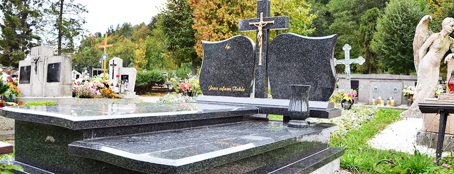

Jak zamówić
Pięć spokojnych kroków od pierwszej rozmowy do montażu. Doradzimy na każdym etapie.
- 01
Rozmowa
Zadzwoń albo przyjdź do biura przy cmentarzu. Opowiedz, jaki ma być nagrobek, a doradzimy wzór, granit i rozmiar.
- 02
Wzór i granit
Wybierasz z ekspozycji, z naszych realizacji albo zamawiasz projekt indywidualny. Pokażemy, jak wygląda kamień w różnych barwach.
- 03
Liternictwo i dodatki
Ustalamy napisy, ornamenty, tablice oraz galanterię: wazony, lampiony, krzyże, ławki.
- 04
Wykonanie
Nagrobek powstaje od podstaw w naszym zakładzie w Mordarce.
- 05
Montaż
Przywozimy i montujemy nagrobek na cmentarzu, na terenie całej Małopolski.
Wykonane u nas, od podstaw
Ponieważ nagrobki wykonujemy sami, możemy zaproponować wszelkie wzory we wszystkich dostępnych barwach i w atrakcyjnej cenie.
Zobacz realizacje
Pytania
Czy wykonujecie projekty indywidualne?
Tak. Projektujemy i wykonujemy nagrobki pojedyncze, podwójne i grobowce rodzinne także według Państwa pomysłu, a do tego tablice nagrobkowe.
Czy montujecie poza Limanową?
Tak, nagrobki montujemy na terenie całej Małopolski.
Ile trwa wykonanie nagrobka?
Zależy od wzoru, granitu i pory roku. Termin podamy przy zamówieniu.
Czy trzeba załatwić coś na cmentarzu?
Na postawienie nagrobka zwykle potrzebna jest zgoda zarządcy cmentarza (parafii lub gminy). Podpowiemy, jak to załatwić.
Czy dorobicie napis na istniejącym nagrobku?
Zadzwoń i opisz, jaki to nagrobek. Liternictwo to jedna z naszych codziennych prac.